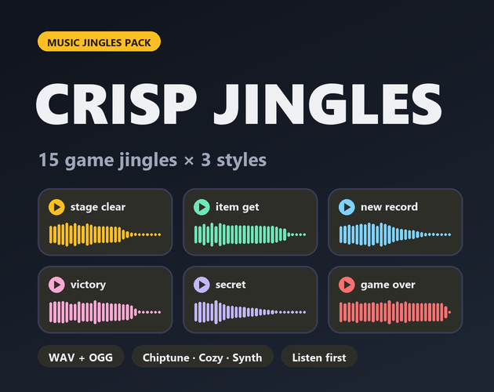

Crisp Jingles: 45 short music stingers for games
Crisp Jingles is a pack of 45 short musical stingers for games: 15 moments such as level complete, game over and item get, each written once and produced in three styles (chiptune, cozy and synth-pop) with the same melody.

- Contents
- 45 jingles: 15 moments x 3 styles (chiptune, cozy, synth-pop)
- Formats
- WAV (44.1 kHz, 16-bit, stereo) and OGG Vorbis
- Price
- $5.99 on itch.io (anipixels.itch.io/crisp-jingles)
- Free sampler
- 9 jingles, free on itch.io (anipixels.itch.io/crisp-jingles-free)
- Licence
- Royalty-free for commercial and non-commercial projects, no credit required, no reselling or redistribution of the files
- Made by
- Anipixels, with procedural code written with an AI assistant (Claude)
What is included
The 15 moments: bonus, boss appear, danger alert, game over, item get, level complete, level start, lose life, new record, powerup get, quest accept, rest heal, secret found, shop open, victory fanfare.
Each one comes in three styles, 15 files per folder. The jingles are 1.1 to 5.3 seconds long.
- Chiptune (15) - file names end in _chip
- Cozy (15) - file names end in _cozy
- Synth Pop (15) - file names end in _synth
Details
- 45 jingles in 3 folders: 15 moments x 3 styles.
- Each jingle exists in all three styles with the same melody: pick the style that fits your game, or mix them (for example chiptune in levels, cozy in menus).
- Every file ends in its own natural reverb tail, so jingles never cut off abruptly.
- Jingles are mixed a little louder than typical sound effects, so duck your music under them.
Formats and engines
- WAV: 44.1 kHz, 16-bit, stereo (for editing and highest quality).
- OGG Vorbis: small files, ready for Godot, Unity, GameMaker and web.
- Every sound is loudness-matched, starts on its first sample (no dead air) and peaks at or below -1 dBFS.
Works with: Any engine or tool that plays WAV or OGG files. The pack's README names Godot, Unity, GameMaker and web.
Free sampler
The free sampler has 9 of the 45 jingles as WAV and OGG: level complete, game over and item get, each in all three styles.
The free itch.io page also hosts the playable browser demo of the full pack.
Licence
Use the sounds in any number of commercial or non-commercial projects (games, apps, websites, videos, streams, game jams). Edit, layer, pitch or otherwise modify them. Credit is appreciated but never required. You may not resell, redistribute or give away the sounds themselves, on their own or as part of another sound library or asset pack, modified or not, and you may not claim them as your own original work in a sound library.
This is a summary of the LICENSE.txt inside the download. The sampler's copy of that file: crisp-jingles.txt.
Questions
Can I use Crisp Jingles in a commercial game?
Yes. The licence allows any number of commercial or non-commercial projects: games, apps, websites, videos, streams and game jams.
Do I have to give credit?
No. Credit is appreciated but never required.
Which engines does it work with?
Any engine or tool that plays WAV or OGG files. The pack's README names Godot, Unity, GameMaker and web.
Can I edit the jingles?
Yes. You may edit, layer, pitch or otherwise modify them.
Can I try it before buying?
Yes. The free itch.io page has a playable browser demo and a free sampler with 9 of the 45 jingles as WAV and OGG. The same 9 sampler files can be played on this site's UI sound board.
Was AI used to make it?
Yes, for the code. Every sound is synthesised from scratch by code that was written with Claude, an AI assistant. No recorded samples and no AI audio-generation models were used.
Screenshots


How it was made
Every sound is synthesised from scratch by code that was written with Claude, an AI assistant. No recorded samples and no AI audio-generation models were used.
Crisp Jingles is part of the Crisp Everything Bundle: all 14 Crisp packs for $19.99 instead of $81.86 bought one by one. View the bundle on itch.io